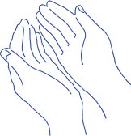
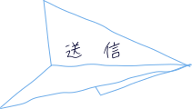

あなたによりそったデザインを


～紙飛行機のように～
お客様の立場に立ってデザインを考え、一緒に作り上げていきます
紙飛行機がひらひらと舞って手元に届くように
一緒に作り上げた作品をたくさんの方に届けたい

WORKS


ABOUT ME

とみなが ともこ
東京都在住。
現在は、気象など自然を相手に仕事をしています。広報での業務や人の命を守るためにはどのような伝え方、見せ方をするのがよいかを考えている時にデザインに出合いました。
SKILL
-
デザイン

illustrator/photoshop/figma
基本的な操作は可能です。ポートフォリオのデザインは、illustrator及びphotoshopを使用しました。photoshopでは、切り抜きや合成、写真の加工ができます。
-
コーディング

html/css/javascript/jQuery
コーディングでは、Visual Studio Codeを使用し、命名規則を用いたコーディングができます。どの端末でも見やすいように、レスポンシブ対応ができます。
CONTACT
当サイトをご覧いただきありがとうございます。
制作のご相談やご依頼はこちらからお気軽にお問い合わせください。
お問い合わせいただいた内容を確認後、ご連絡いたします。
